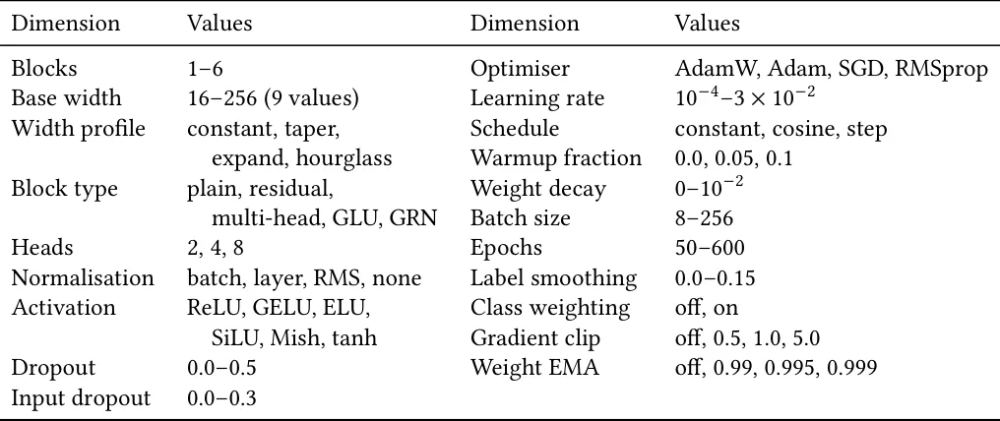

O problema: datasets pequenos, redes desenhadas à mão
Observação da Terra operacional costuma trabalhar com datasets pequenos e tabulares. Coletar rótulos no campo é caro, então os conjuntos de dados têm milhares de linhas de características espectrais desenhadas por especialistas, não milhões de imagens. As redes aplicadas a esses problemas são tipicamente projetadas à mão, como ainda é comum em problemas tabulares em geral.
Busca de arquiteturas neurais (neural architecture search, NAS) é uma técnica madura, mas aplicada quase sempre a visão computacional em larga escala. Seu comportamento nesse regime de poucos dados é muito menos caracterizado, e não é óbvio que uma busca ajude quando a tarefa oferece tão pouco sinal para buscar.
Este paper revisita um modelo publicado recentemente: um classificador de floração de algas (algal bloom) em lagos do Báltico, treinado com dados do satélite Sentinel-2. Os autores mantêm a tarefa, as características e a divisão treino-teste do estudo original fixas, e perguntam: o que a busca de arquiteturas adiciona?
Por que isso importa além da acurácia
A pergunta tem implicações operacionais. Para muitos produtos de observação da Terra, a largura de banda de downlink — a capacidade de transmitir dados do satélite para a Terra — é o gargalo, não a capacidade de sensoriamento. Inferência a bordo do satélite já foi demonstrada em órbita como forma de transmitir apenas dados informativos, economizando banda.
Quão pequeno um modelo competitivo pode ser é, portanto, uma questão operacional, não apenas de eficiência. Se o modelo couber em poucos kilobytes e puder rodar a bordo, o satélite pode filtrar observações antes de transmiti-las, enviando apenas lagos com suspeita de floração e economizando capacidade de downlink.
Os dados: 1.151 observações de lagos do Báltico
O dataset contém 1.151 observações de 429 locais de monitoramento na Lituânia, Letônia e Estônia, coletadas entre 2017 e 2021. Cada linha corresponde a um lago em uma data específica, com refletâncias de superfície do Sentinel-2 e índices radiométricos derivados — do tipo estabelecido para recuperação de clorofila em águas turvas continentais — junto com um rótulo binário de floração.
As classes são quase balanceadas: 624 observações sem floração, 527 com floração. Isso significa que a acurácia pode ser interpretada contra um piso de 52,9% (a taxa de acerto se o modelo sempre chutasse a classe majoritária). Os autores usam as mesmas 14 características do estudo de referência.
A divisão treino-teste reproduz exatamente a do paper original, incluindo a semente aleatória: 70% dos códigos únicos de locais são sorteados para treino, e toda medição de um lago selecionado vai junto. Isso resulta em 801 linhas de treino e 350 de teste, cobrindo 129 lagos não vistos.
Agrupar por lago em vez de por linha é essencial aqui. Um único lago pode contribuir até 17 observações, e dividir por linha permitiria que o modelo memorizasse corpos d'água individuais em vez de aprender padrões generalizáveis.
Avaliação aninhada e a escolha da métrica
Todo o sinal de busca vem de uma validação cruzada de 5 folds agrupada por lago dentro das 801 linhas de treino. O conjunto de teste de 350 linhas é aberto uma única vez, após o término da busca. Esse aninhamento não é formalidade nessa escala.
Selecionar o melhor entre milhares de candidatos nos mesmos dados usados para reportar desempenho produz o máximo de uma estatística ruidosa, não uma estimativa de generalização. O otimismo resultante pode rivalizar com as diferenças entre os métodos comparados — um problema bem documentado na literatura de aprendizado de máquina.
Os autores selecionam com base em AUC (área sob a curva ROC), não acurácia. A razão é prática: com 801 linhas de treino divididas em 5 folds, cada fold de validação tem cerca de 160 linhas. Nessa escala, a acurácia é uma estatística discreta e ruidosa, enquanto AUC, por integrar sobre todos os limiares de decisão, oferece um sinal mais estável para guiar a busca.
O espaço de busca: MLPs estendidos
Os autores buscam em um espaço estendido de perceptrons multicamadas (MLPs). O espaço inclui escolhas de profundidade (1 a 4 camadas), largura (4 a 128 neurônios por camada), tipo de bloco (denso simples ou residual), função de ativação (ReLU, tanh, Swish, Mish), normalização (batch, layer, RMS ou nenhuma), otimizador (Adam, AdamW, RMSprop), taxa de aprendizado, decaimento (step, exponencial, cosseno ou nenhum), dropout, ponderação de classes e média móvel exponencial de pesos (weight EMA).
O espaço contém aproximadamente 10¹² configurações possíveis antes de aplicar a restrição de orçamento de parâmetros. A busca usa evolução regularizada: uma população de arquiteturas é avaliada, as melhores são selecionadas, pequenas mutações são aplicadas, e o processo se repete. É uma técnica clássica de NAS, mas raramente aplicada a problemas tabulares pequenos.

O que a busca encontrou
Os modelos encontrados pela busca melhoram a AUC no conjunto de teste em 3,0 pontos percentuais sobre a melhor baseline (de 0,790 para 0,820) e a acurácia em 1,5 pontos (de 0,733 para 0,748). Isso usando 409 parâmetros contra 10.625 da rede de referência mais forte — uma redução de 26 vezes, ou 47 vezes contra a variante com múltiplas cabeças densas.
Todas as dez configurações mais bem ranqueadas superam todas as baselines em AUC, então o resultado não depende de um único candidato sortudo. Os modelos encontrados também são marcadamente mais estáveis: o desvio padrão entre sementes aleatórias é de 0,001 em AUC, contra 0,006 a 0,010 para as baselines.
Os autores atribuem essa estabilidade à média móvel de pesos (weight EMA) que a busca selecionou. Essa técnica, que mantém uma média móvel dos pesos durante o treinamento e usa essa média para inferência, é conhecida por suavizar a superfície de perda e melhorar a generalização.
O otimismo da estimativa de validação cruzada — a diferença entre AUC na validação interna e no teste — é de apenas 0,006 para os modelos selecionados. Isso indica que a seleção com base em AUC nesse orçamento de dados não é materialmente inflada pelo viés de seleção descrito na literatura.

A receita convergente: uma camada, tanh, RMS norm
Entre as 100 configurações mais bem ranqueadas, várias escolhas são unânimes: blocos densos simples (não residuais), RMSprop como otimizador, decaimento em degraus (step decay) da taxa de aprendizado, normalização RMS, ativação tanh, média móvel de pesos com decaimento 0,999, e ponderação de classes.
A configuração mediana usa uma única camada oculta de largura 24, treinada por 300 épocas. Três dessas escolhas se afastam do que um praticante escolheria por padrão.
Primeiro, a ativação tanh foi largamente substituída por funções da família ReLU na prática moderna. Mas tanh é limitada, o que restringe quão confiantemente uma rede pequena pode se comprometer com apenas 801 linhas de treino disponíveis. Média de pesos desempenha papel similar, sendo a principal fonte da estabilidade observada.
Mais surpreendente: a busca converge para uma única camada oculta. A profundidade das redes de referência não é apenas desnecessária, mas ativamente prejudicial nesse tamanho de amostra. Os autores não anteciparam essa combinação, o que é o argumento para buscar em vez de projetar.
Viabilidade a bordo: 1,6 kB e 400 operações por lago
Com 409 parâmetros, o modelo selecionado ocupa 1,6 kilobytes em float32 e requer cerca de 400 operações de multiplicação-acumulação por lago. Na classe de processador usada em demonstrações de IA a bordo, esse custo é negligenciável.
O modelo poderia filtrar observações candidatas em órbita, de modo que apenas lagos sinalizados como floridos consumam capacidade de downlink — o mesmo argumento que motivou a rejeição de nuvens a bordo em trabalhos anteriores.
Os autores são precisos sobre o que isso estabelece e o que não estabelece. As características usadas aqui derivam de produtos Level-2A corrigidos atmosfericamente, computados no solo, junto com mascaramento de água. Portar essa cadeia inteira para o satélite é um problema separado e mais difícil.
O que o resultado estabelece é que a camada de decisão de tal pipeline é essencialmente gratuita, e que a capacidade que um modelo projetado à mão gasta nela pode ser reduzida em mais de uma ordem de magnitude sem custo — na verdade, com ganho.
O que o paper não mostra
O experimento mantém as características fixas. Os autores não buscam sobre quais índices espectrais usar, apenas sobre a arquitetura que os processa. É possível que busca de características ou aprendizado de representação end-to-end a partir de refletâncias brutas oferecesse ganhos adicionais, mas isso não foi testado.
O dataset cobre lagos do Báltico entre 2017 e 2021. Generalização para outras regiões geográficas, outros tipos de corpos d'água (reservatórios, estuários) ou outras condições atmosféricas não é demonstrada. Modelos treinados em uma região frequentemente degradam em outras devido a diferenças em turbidez, composição de fitoplâncton e ângulos solares.
A viabilidade a bordo é estabelecida apenas para a camada de decisão. A cadeia completa — correção atmosférica, mascaramento de água, extração de características — ainda precisa rodar no solo. Trabalhos anteriores mostraram que portar essa cadeia para o satélite é tecnicamente viável, mas é um desafio de engenharia separado e não trivial.
Finalmente, o paper não compara com métodos de AutoML tabulares mais sofisticados, como AutoGluon ou AutoML baseado em gradient boosting. A comparação é apenas contra redes projetadas à mão no mesmo espaço MLP. É possível que métodos ensemble ou baseados em árvores oferecessem desempenho competitivo, embora provavelmente com modelos maiores.
Por que isso importa para AutoML em observação da Terra
Este trabalho é um dos poucos a caracterizar o comportamento de busca de arquiteturas em problemas tabulares pequenos de observação da Terra. A maioria dos papers de NAS foca em ImageNet ou CIFAR, onde há centenas de milhares ou milhões de exemplos. O regime de poucos milhares de linhas tabulares é comum em aplicações reais, mas raramente estudado.
O resultado mostra que busca pode ajudar mesmo quando o sinal é fraco, e que as arquiteturas encontradas podem divergir radicalmente das melhores práticas estabelecidas em outros domínios. Uma camada, tanh, RMS norm e weight EMA não são escolhas óbvias em 2026, mas funcionam aqui.
A redução de 26 vezes em parâmetros sem perda de desempenho sugere que modelos desenhados à mão para problemas pequenos frequentemente carregam capacidade desnecessária. Isso tem implicações para implantação em dispositivos com recursos limitados, não apenas satélites, mas também drones, sensores de campo e sistemas embarcados.
O código está disponível publicamente, o que permite que outros pesquisadores reproduzam a busca, apliquem o método a outros problemas de observação da Terra, ou usem as arquiteturas encontradas como ponto de partida para novos estudos.
O que fica
- Busca evolutiva de arquiteturas encontrou redes de 409 parâmetros que superam modelos projetados à mão com 10.625 parâmetros em classificação de floração de algas, melhorando AUC de 0,790 para 0,820.
- A busca convergiu para uma única camada oculta com tanh, RMS norm e média de pesos — combinação que um praticante dificilmente escolheria, mostrando valor de AutoML em datasets pequenos.
- Com 1,6 kB, o modelo é pequeno o suficiente para rodar a bordo de satélites, permitindo filtragem de observações em órbita e economia de largura de banda de downlink.
- O paper não testa generalização geográfica, não busca sobre características espectrais, e estabelece viabilidade a bordo apenas para a camada de decisão, não para a cadeia completa de processamento.
Paper original: Evolutionary Architecture Search for Chlorophyll-$a$ Prediction in Lakes using Sentinel-2
Comentários
Nenhum comentário ainda. Seja o primeiro.